Plot the Balance-Sample Size Frontier
plot.matchFrontier.RdPlots the balance-sample size frontier for the supplied matchFrontier object. Can also plot covariate-specific mean differences, means, and other statistics to assess balance on individual covariates across the frontier.
# S3 method for matchFrontier
plot(x, covs = NULL, stat = NULL,
n.estimated, axis = "ndrop", ...)Arguments
- x
a
matchFrontierobject; the output of a call tomakeFrontier().- covs
the names or covariates for which balance statistics are to be displayed, entered either as a character vector or one-sided
formula. IfNULL(the default), will display the frontier for the balance metric used in constructing the frontier ifstat = NULLand otherwise will display the balance measure named instatfor all matching variables.- stat
if
covsis notNULL, the statistic to display across the frontier. Allowable options include"std-diff"for standardized mean differences (the default),"diff"for raw mean differences,"ks"for Kolmogorov-Smirnov statistics,"std-mean"for standardized means,"mean"for raw means,"ks-target"for sample-target Kolmogorov-Smirnov statistics, and"ess"for effect sample sizes. See Details. Abbreviations allowed.- n.estimated
the number of points along the frontier for which to compute balance statistics. Computing statistics at every point on the frontier can be time-consuming for large frontiers, especially when computing Kolmogorov-Smirnov statistics, so using values less than the number of points can save time at the expense of providing less detail in the frontier plot. The default is 250 or the number of points, whichever is smaller. Ignored when
covsandstatare bothNULL.- axis
whether to display the lower x-axis as the number or units dropped (
"ndrop") or the number of units remaining ("n"). Regardless, the other scale will be on the upper axis. Whenxis aMatchItFrontierobject (i.e., resulting frommakeFrontier.matchit()), can also be"caliper", displaying the size of the hypothetical caliper corresponding to dropping the given dropped units. When"caliper", the caliper is scaled by the standard deviation of the propensity scores. Default is"ndrop"; abbreviations allowed.- ...
if
covsandstatare bothNULL, further arguments passed toggplot2::geom_line()to control the appearance of the plot (e.g.,color,size, etc.). Ignored otherwise.
Details
plot.matchFrontier() uses ggplot2::geom_line() to display the balance-sample size frontier. Unless axis = "caliper", the plot has two x-axes: one indicates the number of units dropped, and the other indicates the number of units remaining. Which group this "number of units" refers to depends on the QOI supplied to the original call to makeFrontier().
When covs and stat are both NULL, the y-axis indicates the value of the imbalance metric at the given sample size; otherwise, it indicates the value of the statistic for the covariates supplied to covs depending on the arguments to stat.
When stat is not NULL, one of seven plots can be produced:
standardized mean differences between treatment groups (
stat = "std-diff", the default).raw mean differences between treatment groups (
stats = "diff")Kolmogorov-Smirnov statistics between the treatment groups (
stat = "ks")standardized means, which are equivalent to standardized mean differences between the full matched sample and the target sample (
stat = "std-mean")raw means in the matched sample (
stat = "mean")Sample-target Kolmogorov-Smirnov statistics, the Kolmogorov-Smirnov statistic between the full matched sample and the target sample (
stat = "ks-target")effective sample sizes in the treated and control groups (
stat = "ess")
The target sample depends on the argument to QOI in the original call to makeFrontier(): when "SATE" or "FSATE", the target sample is the full sample prior to matching; when "SATT" or "FSATT", the target sample is the treated group prior to matching. The target sample also determines the standardization factor when computing standardized means or mean differences. For MatchItFrontier objects, the target sample is the treated group prior to matching (because the FSATT is always the target estimand).
When stat = "mean", a dashed line will appear on the plot for each covariate indicating its mean in the target sample. Otherwise, an additional point will be plotted indicating the statistic computed prior to matching; for energy distance- and bin-based frontiers, this is the start of the frontier, but for pair distance-based frontier, the frontier starts after matching, so the additional point corresponds to balance prior to the initial point of the frontier.
When stat = "ess", the effective sample size (ESS) is computed for each treatment group as \((\sum w)^2/\sum w^2\) within each treatment group where \(w\) are the matching weights at the given point on the frontier. covs will be ignored because the ESS is only a function of the weights. In some cases, it is possible for the ESS to increase even as the number of units remaining in the sample decreases.
Value
A ggplot object that can be further manipulated using ggplot2 functionality. For example, to zoom in on an area of the plot, coord_cartesian() can be used.
Examples
data("lalonde", package = "MatchIt")
#Pair distance frontier for FSATT
f1 <- makeFrontier(treat ~ age + educ + married + re74,
data = lalonde, QOI = "FSATT",
metric = "dist", verbose = FALSE)
#Plot the balance metric frontier
plot(f1)
 #Plot standardized mean differences
plot(f1,
covs = ~age + educ + married + re74,
stat = "std-diff")
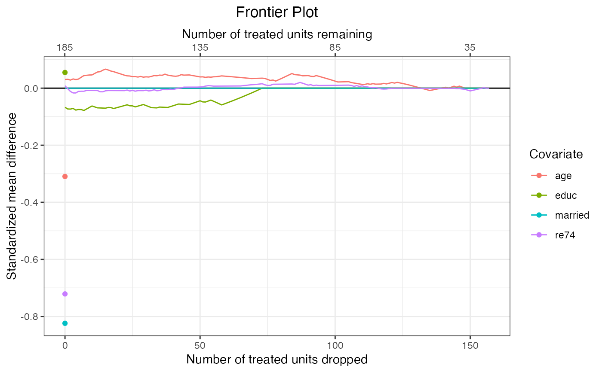
#Plot standardized deviations from the mean
#of the treated group in the original
#sample (prior to matching)
plot(f1,
covs = ~age + educ + re74,
stat = "std-mean")
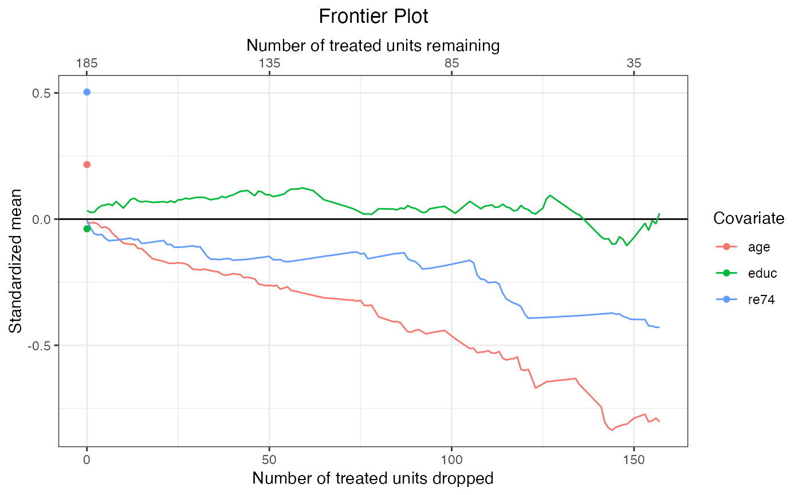
#Plot effective samples
plot(f1, stat = "ess")
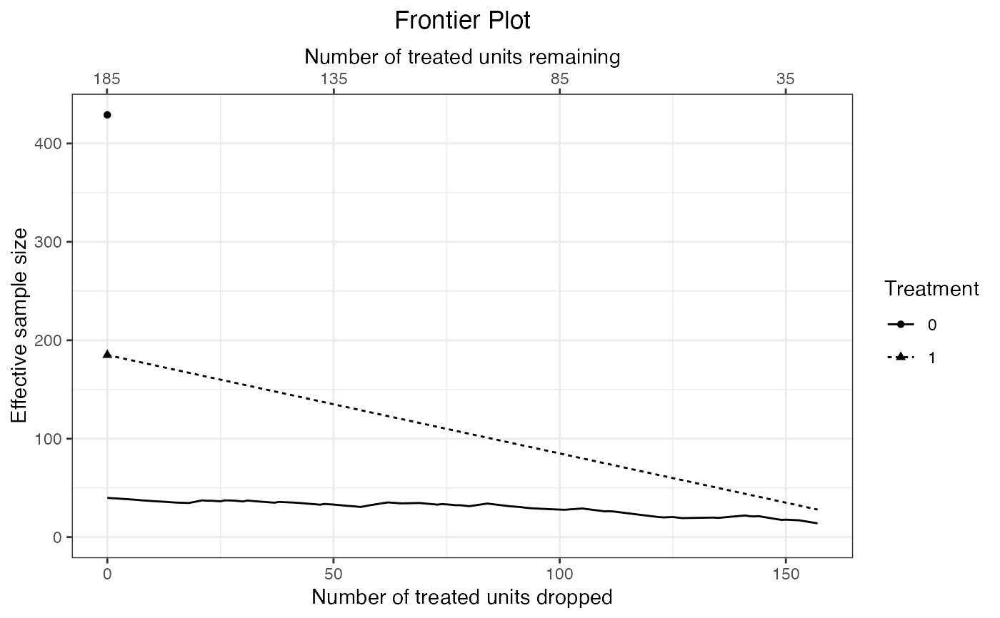
#Plot covariate means across the frontier;
#make sure variables are on the same scale!
plot(f1,
covs = ~married + nodegree,
stat = "mean")
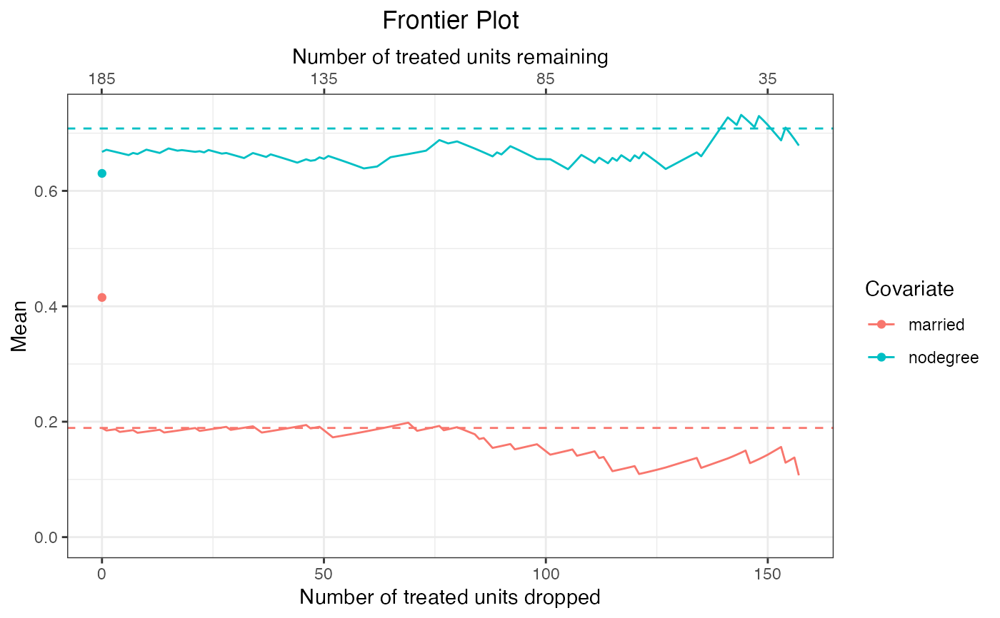
#Plotting a frontier using MatchIt
library("MatchIt")
#1:1 nearest neighbor propensity score matching
#without replacement
m.out <- MatchIt::matchit(
treat ~ age + educ + married + re74,
data = lalonde, method = "nearest",
ratio = 1, replace = FALSE
)
m.out
#> A matchit object
#> - method: 1:1 nearest neighbor matching without replacement
#> - distance: Propensity score
#> - estimated with logistic regression
#> - number of obs.: 614 (original), 370 (matched)
#> - target estimand: ATT
#> - covariates: age, educ, married, re74
#Assess the energy distance as pairs are dropped
fm <- makeFrontier(m.out, metric = "energy")
#> Computing distance matrix...
#> Calculating frontier...
#> Done!
fm
#> A matchFrontier object
#> - quantity of interest: FSATT
#> - imbalance metric: energy distance
#> - treatment: treat
#> - covariates: age, educ, married, re74
#> - number of points: 176
#Plot the balance metric frontier
plot(fm)
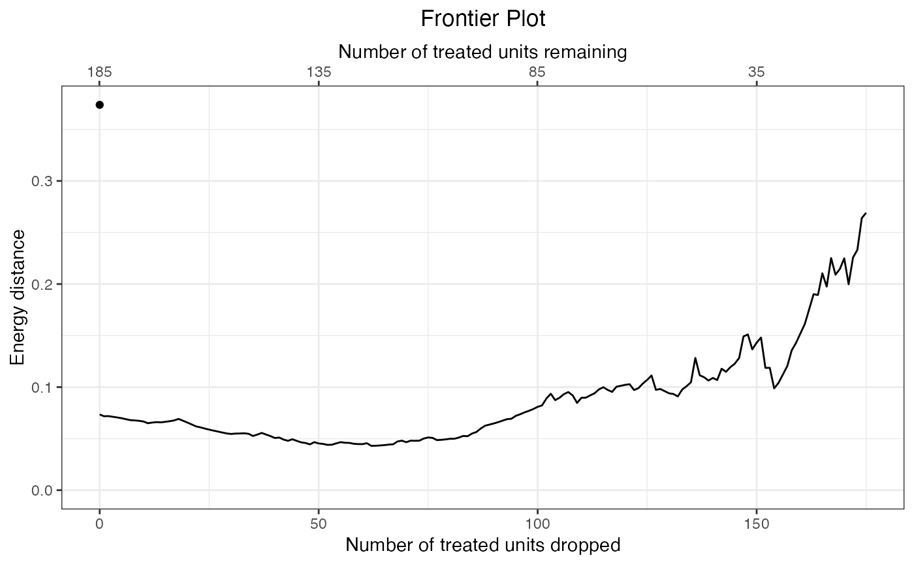
#Plot the frontier with caliper width on the x-axis
plot(fm, axis = "caliper")
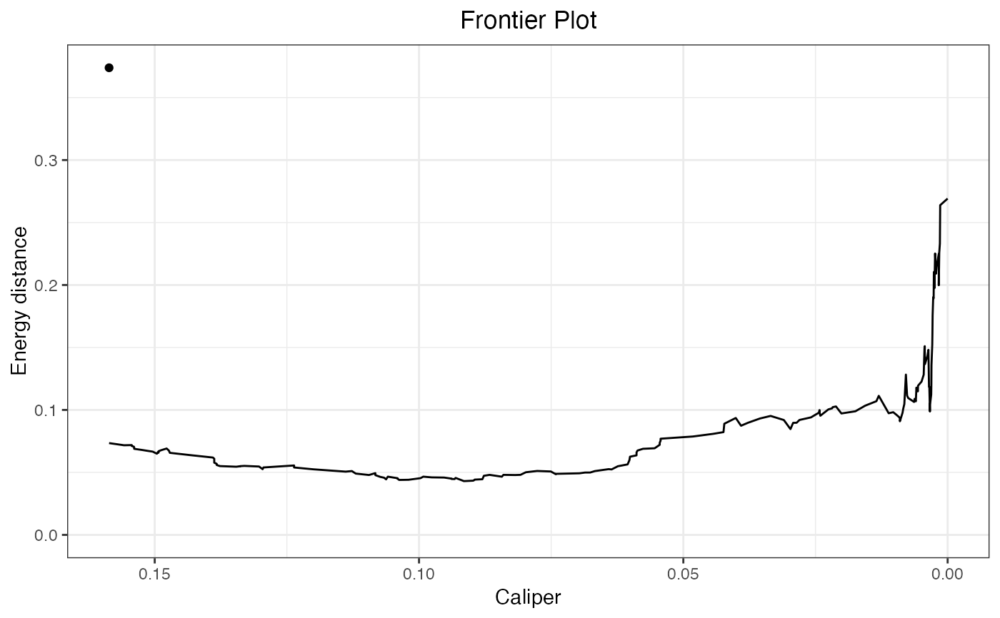
#Plot Kolmogorov-Smirnov statistics
plot(fm,
covs = ~age + educ + married + re74,
stat = "ks")
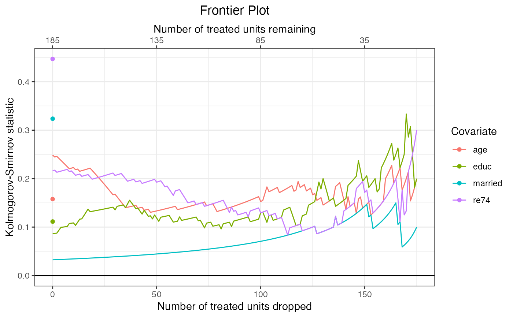
#Plot standardized mean differences
plot(f1,
covs = ~age + educ + married + re74,
stat = "std-diff")
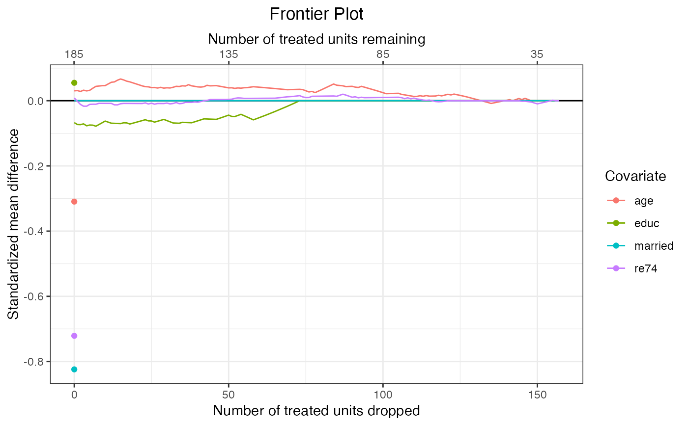
#Plot standardized deviations from the mean
#of the treated group in the original
#sample (prior to matching)
plot(f1,
covs = ~age + educ + re74,
stat = "std-mean")
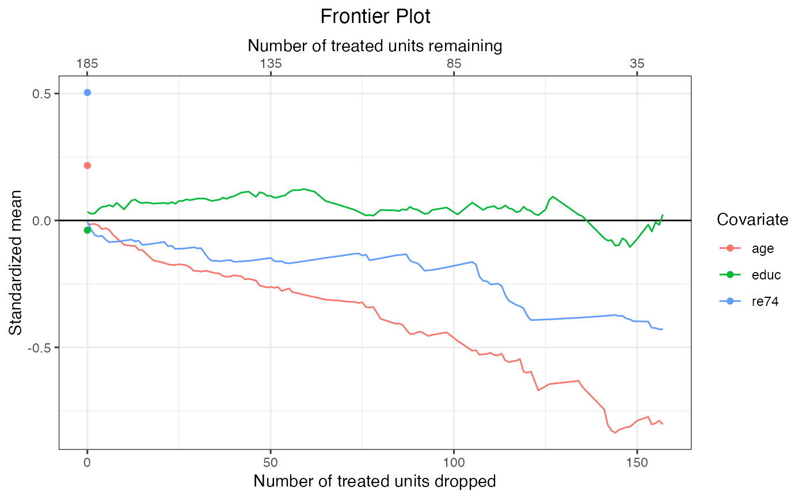
#Plot effective samples
plot(f1, stat = "ess")
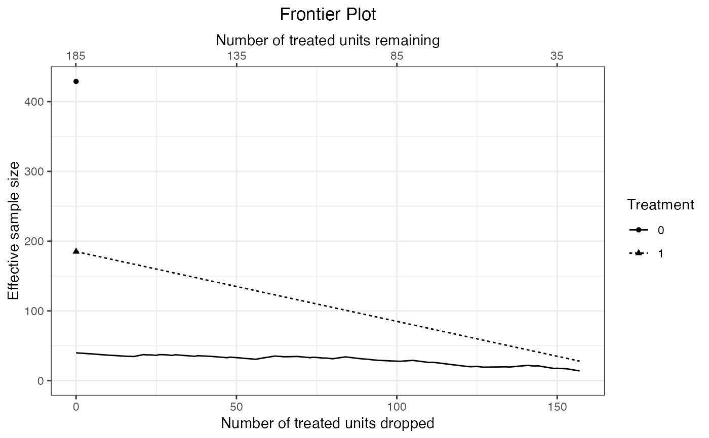
#Plot covariate means across the frontier;
#make sure variables are on the same scale!
plot(f1,
covs = ~married + nodegree,
stat = "mean")
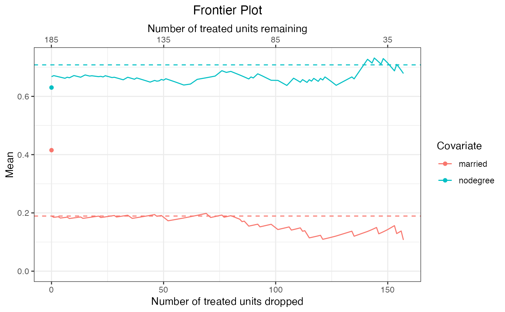
#Plotting a frontier using MatchIt
library("MatchIt")
#1:1 nearest neighbor propensity score matching
#without replacement
m.out <- MatchIt::matchit(
treat ~ age + educ + married + re74,
data = lalonde, method = "nearest",
ratio = 1, replace = FALSE
)
m.out
#> A matchit object
#> - method: 1:1 nearest neighbor matching without replacement
#> - distance: Propensity score
#> - estimated with logistic regression
#> - number of obs.: 614 (original), 370 (matched)
#> - target estimand: ATT
#> - covariates: age, educ, married, re74
#Assess the energy distance as pairs are dropped
fm <- makeFrontier(m.out, metric = "energy")
#> Computing distance matrix...
#> Calculating frontier...
#> Done!
fm
#> A matchFrontier object
#> - quantity of interest: FSATT
#> - imbalance metric: energy distance
#> - treatment: treat
#> - covariates: age, educ, married, re74
#> - number of points: 176
#Plot the balance metric frontier
plot(fm)
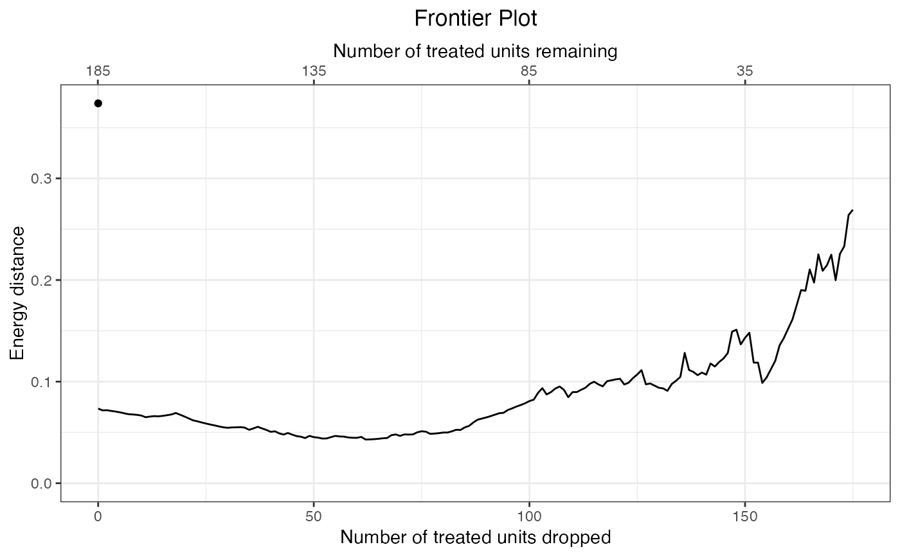
#Plot the frontier with caliper width on the x-axis
plot(fm, axis = "caliper")
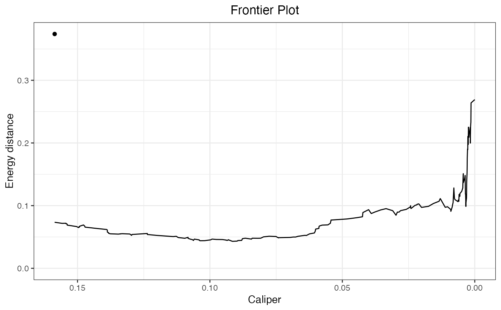
#Plot Kolmogorov-Smirnov statistics
plot(fm,
covs = ~age + educ + married + re74,
stat = "ks")
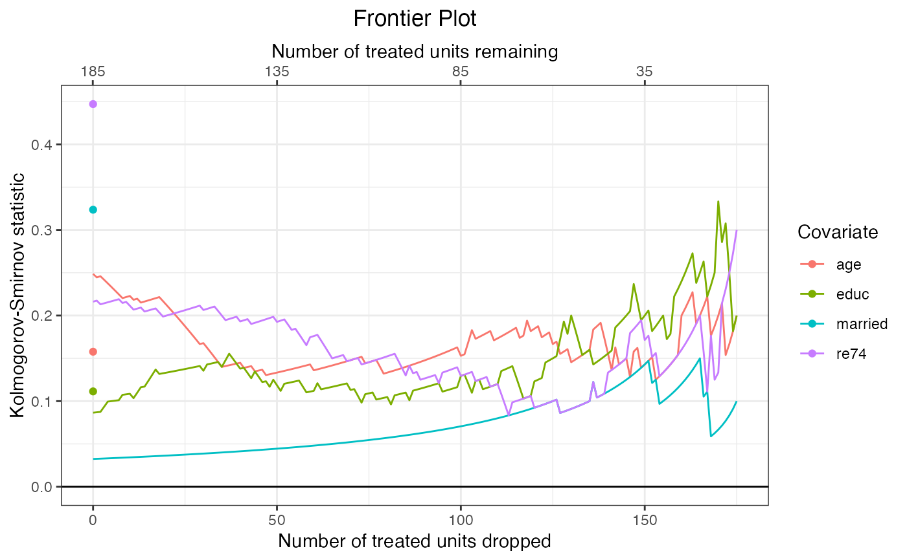